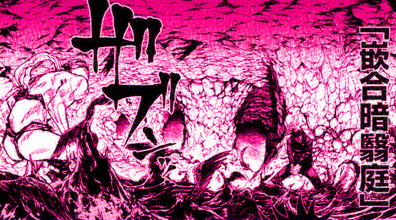
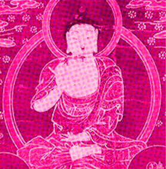
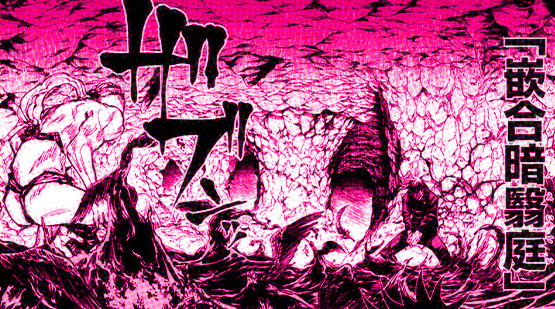
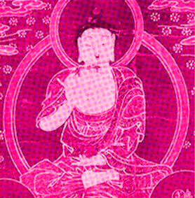

편살즉영체(遍殺即霊体)
편(遍) : 전면적, 모든, 두루, 널리, 보편적임
살(殺) : 죽임
즉(即) : 즉시
불교 용어로 서로 다른 현상이나 실제로는 서로 뗄 수 없는 관계,
겉모습은 다르지만 본질이 완전히 같음을 의미한다.
영체(霊体) : 주령이라는 ‘영체’ 혹은 영과 체를 별개로 보아
영혼과 육체를 따로 의미할 수도 있다.
자폐원돈과(自閉円頓裹)
자폐(自閉) : 자신만의 세계의 틀어박힘
원돈(円頓) : 만반의 채비를 해두어 어떤 일에든 바로 대비함
과(裹) : 망태기, 짚 따위로 엮어 만든 구럭
→ 원돈은 천태종 교리에 등장하는 요소이다.
천태종: 고려시대에서 조선 초기에 걸쳐 있었던 불교의 한 종파로 가장 대표적인 불교의 종파 중 하나이다.
무위전변(無為転変)
불교용어 유위전변과 무위를 조합한 것으로, 무위전변이란 인연따위 없어도 사람은 얼마든지 바뀔 수 있다는 뜻을 의미하고
인간을 비웃고 장난감처럼 가지고 노는 마히토다운 작명이라고 볼 수 있다.
허공장보살과 기예천
마히토는 특이하게 수인이 두개인데
허공장보살은 중생들의 소원을 이뤄주는 보살이고
기예천은 이름 그대로 예술의 신을 의미한다.
복마어주자(伏魔御廚子)
복(伏) :엎드리다, 숨다, 복종함
마(魔) :마, 악귀
어(御) :조종, 통치, 부림
주자(廚子): 불상, 불화, 사리, 경전 등을 안치하는 용기로,
기원은 중국 주방의 조리용구를 넣는 용기에서 발전, 응용된것으로 추측된다.
염마천(염라대왕)
힌두 신화의 야마이자 불교의 염라대왕으로 최종보스답게 다른 수인들과는 달리
보살이나 부처가 아니라 악신이다.
개관철위산(蓋棺鉄囲山)
개관(蓋棺): 관뚜껑을 덮음
철위산(鉄囲山)
: 불교 용어 중 구산팔해의 가장 바깥쪽에 있는 철로 된 산으로 철륜위산을 의미한다.
일본 밀교의 다이코쿠텐(대흑천)
토지의 수호신으로 불리며, 불교(정확히는 밀교)의 유입과 함께 일본에 들어오면서 다이코쿠텐(大黒天 대흑천)으로 토착화된 존재이다.
무량공처 (無量空処) = 공무변처(空無邊處)
무량(無量): 헤아릴 수 없을 만큼 큰, 지혜와 진리로 가득 찬
→ 불교에서 무량광은 ‘큰 깨달음의 지혜, 광명으로 진리를 깨친’이라는 뜻
공처(空処): 빈 공간
제석천
고대 인도의 신 인드라(Indra)로 벼락을 무기로 하여 일체의 악마를 정복하는 신으로 불교에 수용되면서부터는 불법을 지키는 수호신으로 불린다.
 



감함압예정(嵌合暗翳庭)
감함(嵌合): 기계의 각 부분이 맞물리는 상태, 끼워 맞춰진 상태
압예(暗翳): 암영, 어두운 그림자
정(庭): 정원, 뜰, 마당, 어떠한 장소
약사여래
질병을 고쳐주고 재앙을 물리치는 부처로, 이 부처를 지키는 열두 야차 중 하나가 마허라다. 즉, 십종영법술의 식신 마허라를 의미한다.
좌살박도(坐殺博徒)
좌(坐): 앉아있음
살(殺): 죽임
박도(博徒): 도박사
앉은 자리에서 사람을 죽이는 도박사라는 의미이다.
변재천
실존했던 강이 신격화된만큼 재물과 복의 흐름을 주관하기도 한다.